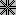

Tkinter 8.5 reference: a GUI for Python |
Tkinter 8.5 reference: a GUI for Python |
There are quite a number of different mouse cursors available. Their names and graphics are shown here. The exact graphic may vary according to your operating system.
Table 4. Values of the cursor option

| arrow |

| man |

|
based_arrow_down
|

| middlebutton |

| based_arrow_up |

| mouse |

| boat |

| pencil |

| bogosity |

| pirate |

|
bottom_left_corner
|

| plus |

|
bottom_right_corner
|

| question_arrow |

| bottom_side | right_ptr | |

| bottom_tee | right_side | |

| box_spiral | right_tee | |

| center_ptr |

| rightbutton |
circle | rtl_logo | ||

| clock | sailboat | |
coffee_mug | sb_down_arrow | ||
cross |

|
sb_h_double_arrow
| |
|  | cross_reverse |

| sb_left_arrow |

| crosshair |

| sb_right_arrow |

| diamond_cross |

| sb_up_arrow |
dot |

|
sb_v_double_arrow
| |
dotbox | shuttle | ||

| double_arrow |

| sizing |
draft_large |

| spider | |

| draft_small |

| spraycan |
draped_box |

| star | |

| exchange |

| target |

| fleur | tcross | |

| gobbler |

| top_left_arrow |

| gumby |

|
top_left_corner
|

| hand1 |
top_right_corner
| |

| hand2 |

| top_side |

| heart |

| top_tee |
icon |

| trek | |
iron_cross |

| ul_angle | |
left_ptr |

| umbrella | |

| left_side | ur_angle | |
left_tee |

| watch | |

| leftbutton |

| xterm |

| ll_angle |

| X_cursor |
lr_angle |